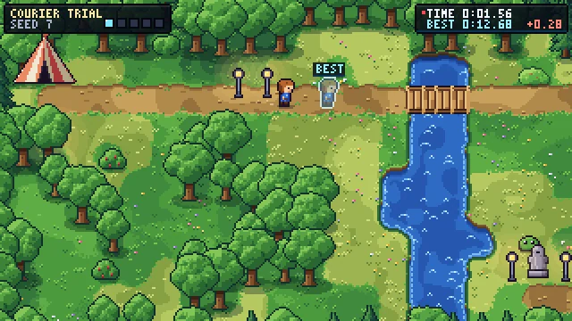
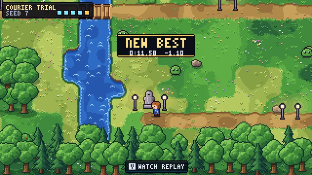
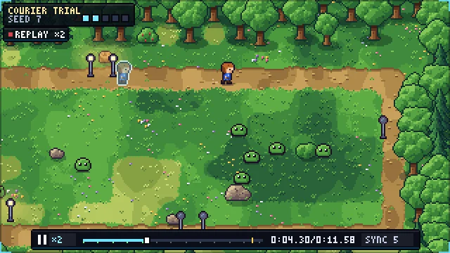
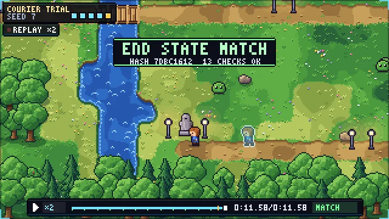

Seeded replay & ghost
Replays and a ghost to race that always end exactly the same way. An add-on for any game.
What it does
Records every run as its seed plus the player's raw input on each fixed step, and plays it back through the game's own step function to the identical end state.
Made forracing, platformer and arcade time trials (ghost of the best run)speedrun-friendly action games (shareable replay text, verified end state)roguelites and puzzle games with daily seeds (replay a seed, compare runs)any fixed-step 2D canvas game whose update can be made deterministic from a seedbug reports: a replay text reproduces the exact run
Tested: 10/10 runs on unseen games passed · visual review 7.6
Moments
Four moments from the demo

Play from here
Play from here
Play from here
Play from hereTake it home
Hand it to your agent
- Copy the prompt. It is written for a game your agent has never seen.
- Give it the module (
seeded-replay.js) and its README. - Play your game. The prompt ends with checks your agent can run.
# Add Seeded replay & ghost to my game Add the game element below to MY existing game, which you have not seen. It is a finished module file given with this prompt: - `seeded-replay.js` (one global, `GameDNA_SeededReplay`), API reference `seeded-replay.README.md` README example names are placeholders. ## Shared premises 1. **Include each module file verbatim; never edit it.** Load it with its own `<script src>` before the game's script, or paste it unchanged into its own `<script>` tag. If a module seems to need a change, adapt my game around it and tell me. 2. **Resolution:** keep my game's native resolution and integer scaling as they are. Call module draw functions on my 2D context inside the same transform as my sprites (one module pixel = one game pixel), and keep my game's own image-smoothing setting (off for pixel art, on for smooth or HD games; never switch it). 3. **Time:** drive every module from one fixed 60 Hz step (1000 / 60 ms). If my loop uses variable delta time, accumulate it and run whole steps (at most 250 ms per frame). 4. **Coordinates:** native screen pixels (world minus camera) unless a section says tiles. 5. **Art and names:** anything new you draw or name is original (no real game, character, place or brand names); English UI text; do not restyle my game. 6. **Hook, don't replace:** add calls or change bodies; never delete or rename a function.Open the whole prompt
Works well with
Combine it
Also pairs well with
Conditional tactic rulesUnits that act by your rules, and say which rule fired.
Bevelled window + pointer cursorClassic framed menus with a bobbing pointer.
Turn-order barA strip of portraits showing who acts next.
Springy UI motionMenus that open, pop and settle with a little bounce.
Weather & ambient particlesRain, snow, leaves and fireflies in layers.
Timing-bar minigameA press-at-the-right-moment check for any action.